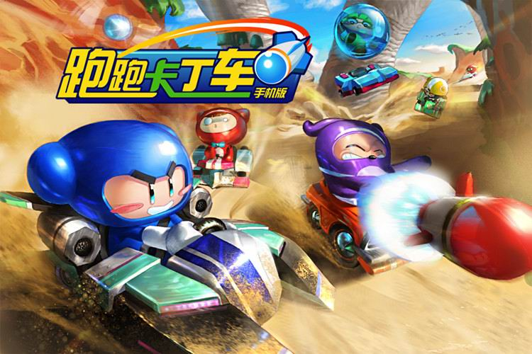
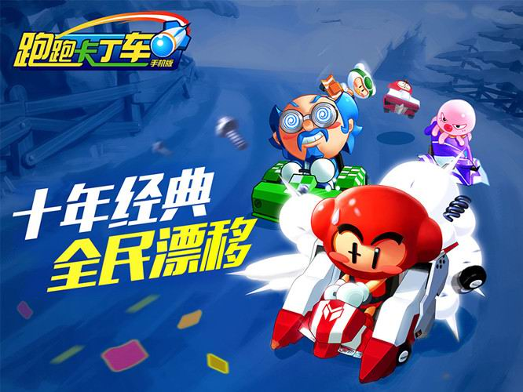
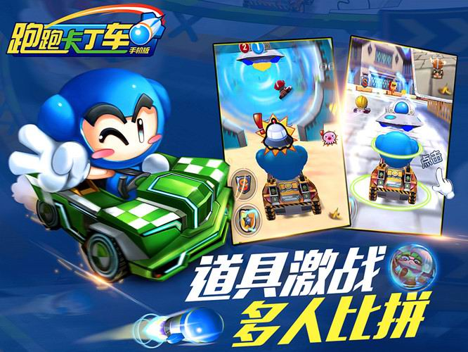
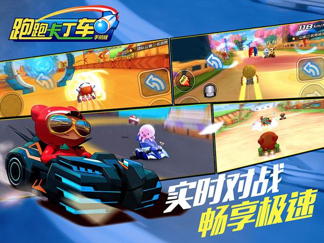

十年经典《跑跑卡丁车》IOS手机版5月中上线
发布日期：2015年05月08日
世纪天成2015年正版授权《跑跑卡丁车手机版》即将于5月中IOS上线，这是一款承载着三亿玩家期待的十年经典IP同名手游，全民漂移时代即将来临！
《跑跑卡丁车手机版》完美继承了端游版的经典特色，更在手机端进行了全面优化，别样的多人道具比拼，激烈的急速实时对战，丰富的赛车“改装”特色，无疑让玩家在重温旧日感动的同时，邂逅新的惊喜！
《跑跑卡丁车手机版》官方网站：http://mpopkart.tiancity.com

十年经典 全民漂移
为了适应手机平台的特点和手机玩家的操作习惯，游戏加入了“一键漂移”和“自动导航”等功能，经典的角色、熟悉的赛道、酷炫的赛车、完美的手感，真正做到全民漂移，大家同乐！
道具激战 多人比拼
玩家耳熟能详的道具比赛模式，打造全新竞速体验！你既可与电脑AI对战，也可找好基友一起玩耍。极富攻击性的导弹、水苍蝇、水泡，可以干扰对方的飞碟、香蕉皮，加上所未有的全新道具――传送门、章鱼等等，让你爱不释手，动力十足！
实时对战 畅享极速
想要体验弯道超车的刺激感？或是随时随地拉上身边的好友来场速度与激情的PK？只要拿起手机,手指轻轻“一键”即可极速享受《跑跑卡丁车手机版》带来的实时对战快感！
诚意之作 期待与全民共同成长与优化
此次《跑跑卡丁车手机版》IOS上线为“抢先体验版”，作为正版授权IP同名手游我们希望以更有诚意、更有责任的态度倾听首批忠实玩家的真实反馈，以便进一步优化游戏，为《跑跑卡丁车手机版》全平台正式上线奠定良好的基础。
《跑跑卡丁车》10年来的风雨同舟，用手机版来重温那一段经典的青春记忆！

《跑跑卡丁车手机版》官方网站：http://mpopkart.tiancity.com
《跑跑卡丁车手机版》微信公众号：跑跑卡丁车手机版
《跑跑卡丁车手机版》新浪官方微博：跑跑卡丁车手机版
《跑跑卡丁车手机版》官方QQ群：二群：418998196 一群：194649621